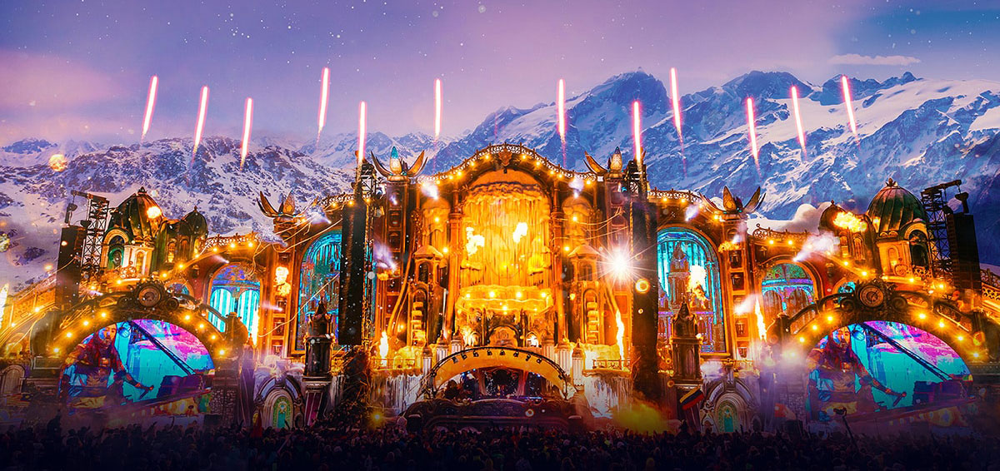
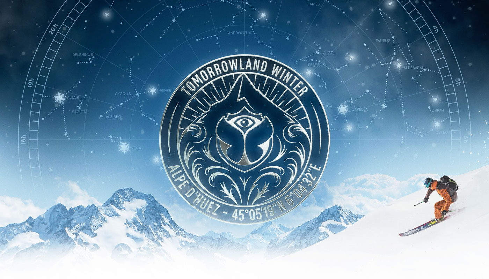

¡Novedades y... mucho más!😁
5 nuevos singles de tus artistas favoritos:
- Otto Knows, Dice of Knights, Alex Aris- LOVER
Después de lanzarse finalmente al mundo de la música electrónica con su single 'Pyramids' hace tres meses, el altamente renombrado Otto Knows se lanza con su segundo single 'Lover' en Tomorrowland Music, ¡justamente en el día de hoy!. Este nuevo tema no dejará de sorprenderte con sus inspiradoras melodias, sus secuencias vocales hipnóticas y su suave combinación con unas vibraciones 'future vintage'. - Tita Lau- ROCK & ROLL
Con el ímpetu creciendo como una de las productoras y DJ talentosas emergentes más emocionantes de la música electrónica, Tita Lau ofrece un tema de house de alta energía y contagioso, 'Rock & Roll', ¡lanzado hoy a través de Tomorrowland Music! La DJ, productora y vocalista con sede en el Reino Unido trae el calor con su hipnotizante nuevo sencillo, que combina su propia voz con sintetizadores duros y líneas de bajo contundentes: lo último en complacer a la multitud para una noche de club llena de energía. - Matisse & Sadko, Timofey- FEELING
¡La realeza del house progresivo Matisse y Sadko están revelando su nueva canción 'Feeling', lanzada hoy a través de Tomorrowland Music! Uniendo fuerzas con su buen amigo y productor Timofey, los hermanos lo mantendrán al borde de su asiento con su última oferta, que encarna completamente el estilo característico del dúo de música house progresiva emotiva. - Keanu Silva, Lolo Rachelle- LOVIN' YOU
El DJ y productor alemán Keanu Silva está revelando su nueva arma de baile contagiosa 'Lovin' You', ¡lanzada hoy a través de Tomorrowland Music! Conocido por ofrecer un sonido house misterioso y ecléctico con un toque progresivo, Keanu Silva ha creado una versión moderna de club dance del clásico de los años 70 de Minnie Riperton, fusionando su sonido característico auténtico y único tanto para el pop/dance como para la música de club. - Cellini, Amos- LOSE YOURSELF
El talento emergente ítalo-belga Cellini está lanzando 'Lose Yourself' a través de Tomorrowland Music hoy. “Lose Yourself” se presenta en forma de una combinación melódica sublime entre sonidos acústicos y electrónicos, a veces profundos y emocionales, pero a veces poderosos y exultantes, con la voz del vocalista Amos como la guinda del pastel. Nuevo Tomorrowland de... ¿INVIERNO?
¡Prepárate para una nueva y mágica aventura en 2023! Las sorprendentes cifras de Tomorrowland en su regreso:
Alpe d'Huez está situado en una meseta totalmente orientada al sur en los Alpes franceses. Con 300 días de sol al año, Alpe d'Huez Grand Domaine Ski es un paraíso para esquiadores, buscadores de adrenalina y para aquellos a los que simplemente les gusta caminar y disfrutar del paisaje. Los 250 km de pistas de esquí de Alpe d'Huez atraen a entusiastas de la nieve de todo el mundo.
El área de esquí ofrece diversión para todos los niveles de esquiadores y snowboarders: desde áreas para principiantes hasta pistas de esquí legendarias como 'Sarenne', con una longitud de 16 km. Los esquiadores tendrán fácil acceso a toda la zona a través de los 70 remontes mecánicos, algunos de ellos también accesibles a los peatones, lo que les permitirá admirar fácilmente maravillosos paisajes cubiertos de nieve. Disfrute de un hermoso mundo de cuento de hadas de hielo y nieve, el escenario perfecto para una semana mágica, y explore el pueblo de Alpe d'Huez con la pista de hielo, la pista Alpine Coaster y el centro de ocio con su muro de escalada, piscina y sauna. Todo el complejo emerge a menudo como una isla de un suave manto de nubes debido a las buenas condiciones climáticas.
|  |  |
Tomorrowland, el festival de música electrónica más importante del mundo, ha vuelto a Bélgica tras dos años de pandemia. En su regreso se ha celebrado durante tres semanas, cuando lo habitual eran dos. Más de 700 Dj's de todo el planeta se han dado cita con una gran asistencia de público. Estos son los datos de asistentes a la macrofiesta del techno: más de 600.000 personas procedentes de todas las partes del mundo vinieron a disfrutar de esta gran experiencia.
Click para volver al inicio de las novedades